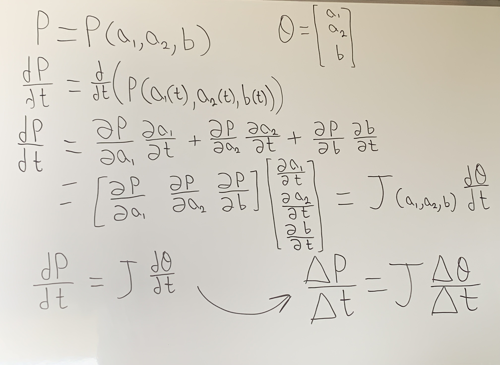
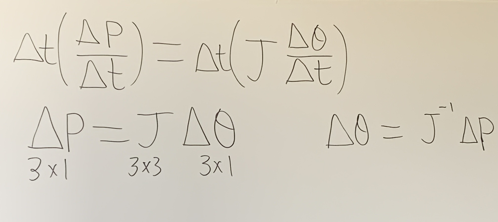
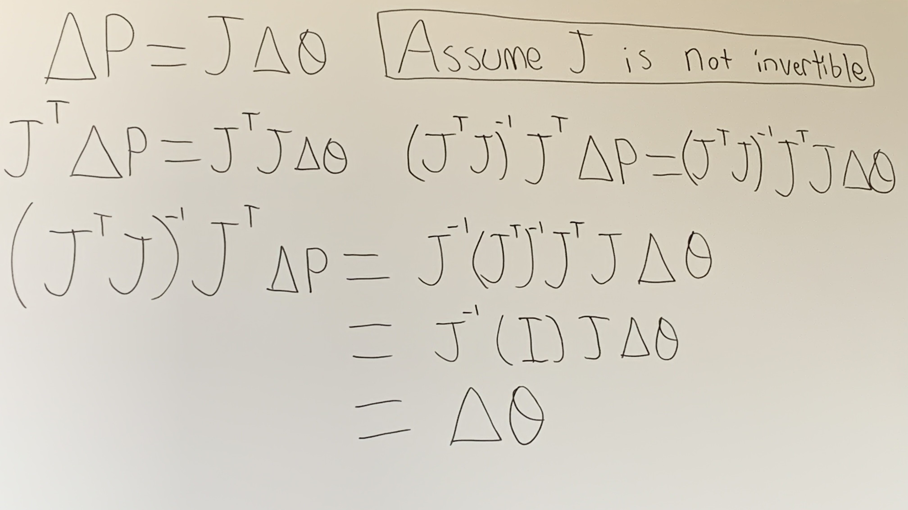
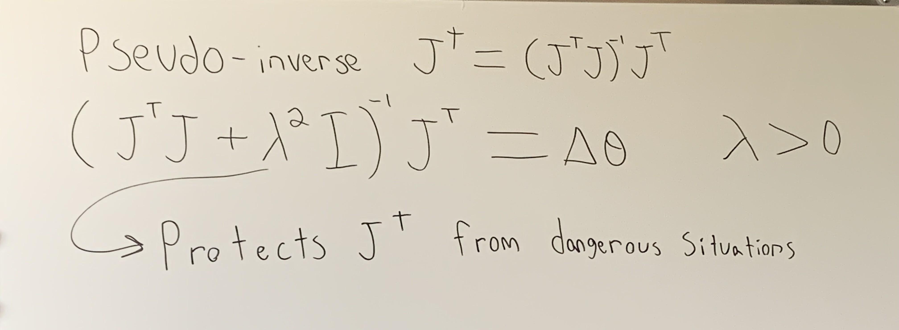
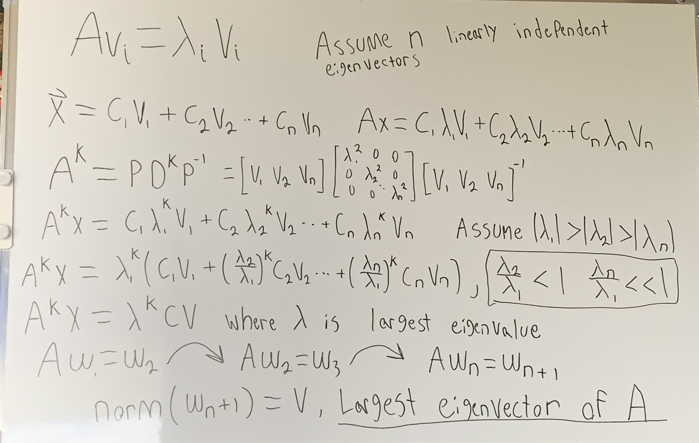

This project implements real-time Cartesian control of a 3-DOF robotic arm using a Jacobian-based inverse
kinematics solver, Cartesian-space PID control, and a singularity detection and avoidance strategy.
System Design Summary
Forward and inverse kinematics
Jacobian formulation with damped least squares
Workspace-based (Cartesian) control rather than joint-space control
PID control for Cartesian commands with variable timestep
Singularity detection using principles derived from singular value decomposition
Singularity avoidance using positional awareness and motion redirection
Motivation and Problem Statement
The goal of this project was to design and program a robotic arm with rotational joints that could be
controlled in the direction of an arbitrary vector in ℝ³, rather than through direct joint angle commands.
This framing shifts the control problem from joint space to task space and requires the use of kinematics,
Jacobians, and feedback control.
I pursued this project to reinforce and integrate concepts from multivariable calculus, linear algebra,
statics, and introductory C programming, all of which I had completed in the preceding semester. Rather than
treating these topics independently, the intent was to apply them to a single, constrained physical system.
The system was intentionally limited to an Arduino Uno, two 9g hobby servos, and a single stepper motor.
This configuration represents the minimum number of joints required to span a three-dimensional workspace
while avoiding redundancy and the need for null-space optimization.
Hardware limitations significantly influenced the control strategy. The Arduino’s limited computational
resources imposed constraints on numerical precision and algorithmic complexity, while the servos’
integer-degree position resolution introduced quantization error that directly affected end-effector
tracking accuracy. These limitations highlighted the tradeoffs between theoretical control design and
embedded implementation.
System Architecture Overview
Mechanical Design and Power Transmission
Design Goals and Constraints
The mechanical design was driven by three primary constraints: limited actuator torque,
3D-printable geometry, and the need for repeatable rotational motion in all three degrees
of freedom. All components were designed and manufactured in-house using PETG filament,
with an emphasis on modularity and ease of iteration.
Base Rotation and Drive System
The base of the robot was redesigned to function as a bearing-driven rotating platform.
A stepper motor mounted in the stationary base drives a bevel gear, which meshes with a
second bevel gear rigidly attached to the center race of the rotating base. This configuration
allows the upper structure of the robot to rotate independently while maintaining axial
alignment and load support.
This design separates load-bearing and torque transmission functions: the bearing geometry
supports axial and radial loads, while the bevel gear pair transmits rotational motion from
the stepper motor. This approach improves rotational stability compared to direct shaft
mounting and better reflects drivetrain architectures used in industrial rotary joints.
Link Geometry and Joint Layout
The manipulator consists of two serially connected links mounted above the rotating base,
forming a three-degree-of-freedom arm. Initial link lengths of 200 mm were reduced to
approximately 80 mm after testing revealed actuator limitations.
The first link mounts directly to a servo horn and includes an integrated bracket for the
second servo. The second link was derived from the same geometry and modified at the distal
end to include a pointer for visually validating the estimated end-effector position.
Materials and Manufacturing
All structural components were manufactured from PETG using a consumer-grade 3D printer.
PETG was selected over PLA due to its increased toughness and resistance to brittle failure,
making it more suitable for repeated loading and iterative redesign.
Designing components to interface with off-the-shelf electronics required careful
consideration of tolerances, fastener placement, and assembly order. Calipers were used
extensively to validate critical dimensions of electronics prior to printing.
Mechanical Limitations
The primary mechanical limitations of the system stem from actuator torque constraints,
backlash in 3D-printed gear interfaces, and the absence of integrated wire management.
These factors influenced both achievable workspace and control performance and inform
several of the proposed future improvements.
Electronics and Hardware
The control hardware consists of an Arduino Uno microcontroller, two SG90 hobby servos, and a 28BYJ-48
stepper motor. Component selection was constrained by the contents of an electronics starter kit,
intentionally prioritizing accessibility and cost over performance.
These constraints resulted in limited positional resolution, torque output, and computational capacity,
making the system well-suited for studying the practical limitations of embedded control. A solderless
breadboard was used to facilitate rapid iteration and debugging.
Software Architecture
The software was developed iteratively with an emphasis on modularity and testability. At a high level,
the control loop follows this sequence:
Initialize joint states and system parameters
Compute forward kinematics
Accept a user-defined direction vector in task space
Apply Cartesian-space PID control to reduce positional error
Compute joint updates using a damped least-squares Jacobian solver
Detect proximity to kinematic singularities
Command actuators to the updated joint positions
Each functional block was designed to be as independent as possible, allowing individual components to be
tested in isolation. This architecture enabled debugging and validation of the control logic without
requiring the physical hardware to be connected.
Mathematics and Kinematics
Forward Kinematics
Forward kinematics were derived by solving for each Cartesian coordinate as a function of the three joint
angles. This formulation provides the mapping from joint space to task space.
Graphical representation of robotic arm with forward kinematics shown.
Inverse Kinematics
Initial inverse kinematics solutions were explored using trigonometric methods based on the robot’s
specific geometry. While effective for unit-vector commands, this approach lacked generality.
A Jacobian-based inverse kinematics method was ultimately implemented. This approach relies on local
linearization of the end-effector motion and uses matrix equations to relate differential changes in
position to changes in joint angles.

Hand-derived Jacobian relating joint velocities to Cartesian end-effector velocity.

simplification of the above, relating change in position to change in angles.
Jacobian Solution and Damping
Although the system is non-redundant and the Jacobian is theoretically invertible, the inverse problem
was formulated as a least-squares solution to better align with industry practice and enable future
expansion. A damping coefficient was introduced to improve numerical stability near singularities.

Hand-derived Least squares solution for the jacobian matrix equation.

The added damping coefficient ensures the eigenvalues of J^T J remain positive. Without this coefficient, Matrix inversion
becomes numerically unstable near singular regions.
Singularity Detection and Avoidance
Singularities were detected by monitoring the smallest singular value of the Jacobian matrix. Computing
a full singular value decomposition at runtime was avoided due to computational constraints; instead,
eigenvalue-based methods were used to approximate proximity to singular configurations.

Hand-derived explanation of how the largest eigenvector of a matrix can be found. to find the smallest Eigenvector and therefore smallest singular
value it follows from this explanation that solving the augmented matrix [A,w2] and repeating the process would yield such a result.
Avoidance strategies depend on the detected singularity type. Boundary singularities are handled by
reversing the desired direction vector, while central singularities are avoided by redirecting motion
tangentially. Damped least squares further smooths behavior in high-risk configurations.
Control Strategy
Intial Method
Positional cartesian controls paired with an error correction system was the first major control method. The method operates by taking in a
cartesian position command, running inverse kinematics to move the bot to said position, then the bot compares its current position to what the commanded
position was using vector projection and then runs inverse kinematics again this time in the direction of the error vector. While boasting a high accuracy,
this method was ultimately scrapped because the error vector movement was victim to the same mechanical issues as the initial movement vector, leading to unavoidable drift.
This method also demanded computing inverse kinematics twice in one direction command, something extremely computationally taxing which pushed the arduino to its limit.
Current Method
Velocity-based cartesian controls utilize PID closed loop controls to "push and pull" the robot to its desired destination. This method operates by taking in a cartesian velocity
command and converting it to a target position by multiplying said command by the time it took to run the command and adding the result to the previous target velocity. This target position
is compared to the actual position of the bot and movement begins by correcting this error with a proportional, integral, and derivative term. This PID loop then computes the velocity to best
correct the positonal error and passes the correction into inverse kinematics where movement begins. The motivation for this control scheme came from my interest in learning more about PID loops
and desire to mimmic what would be used in industry or more complex designs. PID control offers natural damping and adjustments to working conditions, my electronics still limit the true realization
of this but future modifications will notice. A difficulty in using this method properly was tracking the change in time between commands. Because the program does not know how long the next input
from the user will take the time had to be computed by taking the time at the beginning of the control loop and comparing it to the time at the beginning of the previous run of the loop. This
method also had the added challenge of tuning the weights of each term in PID, this meant closely paying attention to the bot until controls didnt feel too sluggish but also not too unpredictable.
Due to actuator quantization and the absence of strong steady-state disturbances, the integral term
provided limited benefit in this implementation. Despite these constraints, the control framework
remains effective when tested in simulation and serves as a foundation for future iterations using
higher-quality actuators.
Software Implementation
The system was programmed using Arduino C++ within the Arduino IDE. Libraries such as
Servo.h, math.h, and BasicLinearAlgebra.h were used to reduce
implementation overhead and focus development on control logic and system integration.
Challenges and Failure Modes
Mechanical challenges included designing 3D-printed components with tight dimensional tolerances to
interface correctly with electronic hardware. Wire management also proved difficult and is not fully
addressed in the current design.
From a control perspective, integrating continuous mathematics into discrete-time embedded software
required numerical solutions for PID control and singularity detection, introducing additional sources
of error.
Results
Experimental testing is ongoing. Preliminary results demonstrate stable Cartesian motion away from
singular configurations.
Future Improvements
Higher-precision actuators for improved tracking accuracy
Redesigned mechanical structure with integrated wire management
Additional degrees of freedom enabling redundancy and null-space optimization
Migration to a more powerful microcontroller such as an ESP32
.jpeg)